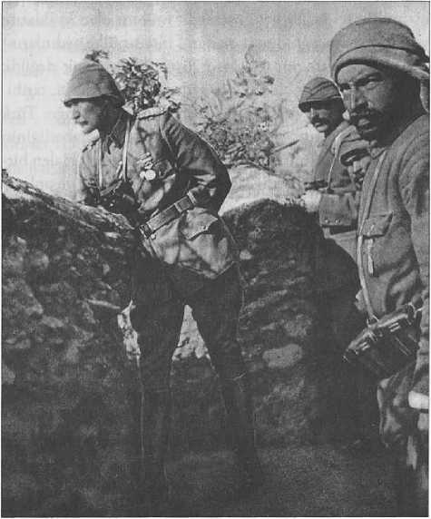
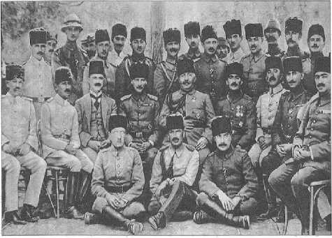
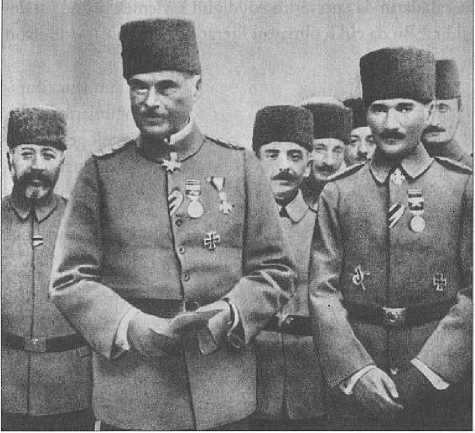
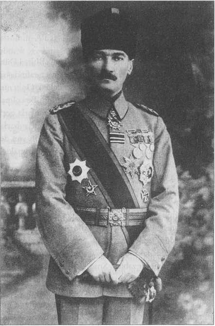
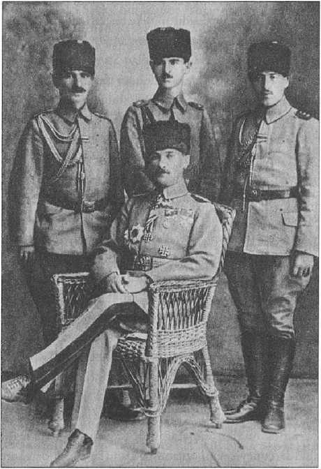
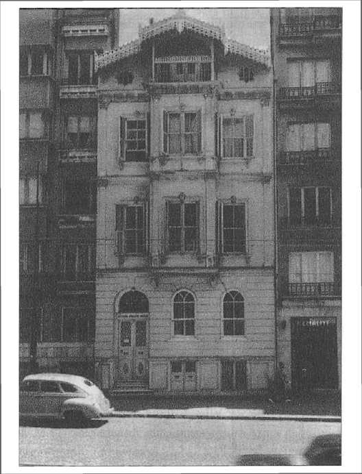

3
BİRİNCİ DÜNYA SAVAŞI YILLARI
Birinci Dünya Savaşı Öncesi
BİR faciaya dönüşen Balkan Savaşı’ndan sonra orduda bir tensikat başladı. Subaylar gençleştirildi ki Birinci Dünya Savaşı’nın bütün kuvvetli genç kumandanları bu dönemden gelmedir. Teçhizata kuvvet verildi. Askerin talimine önem verildi. Bu Pomiankowski gibi Avusturyalı ataşemiliterlerin, bazı Alman müşavirlerin ve İngilizlerin raporlarında görülebilir. Balkan Savaşı’ndan sonraki iki yılda Türkiye ordusu hayli güçlenmiştir. Bununla birlikte hükûmet diplomasi sanatını yeterince kullanamıyordu ve savaştan en çok çekinen devlet olmamasına rağmen Rusya ve
İngiltere ittifakı bazı Türkleri dehşete düşürdü.
Bu arada, Birinci Dünya Savaşı öncesinde Almanlar çok çekinirlerdi. Çünkü itilaf cephesine karşı merkezî devletler ittifakında, yani bizim dâhil olduğumuz merkezî ittifakta İngilizlerle çarpışan, direnen ve çok uzun bir harbi sürükleyen başka bir ülke yoktu. Başta birtakım Alman diplomatlar (Büyükelçi Wangenheim gibi) ve ordu mensubu da (bilhassa Alman donanma erkânı) Türkiye’nin merkezî ittifaka dâhil edilmesine karşıydılar. “Balkan Savaşı da gösterdi ki Türklerde savaşçılık kalmamış, eski menkıbelere bakmayın. Bunlarla ittifak yapılamaz" diyorlardı. Harbte, beceriksiz ve zayıf müttefik düşmandan daha büyük yüktür, yani felakettir. Onun için bu durumda ancak Türk ordusunu çok iyi tanıyan, subayın ve askerin kalitesini benimseyen bazı Alman ve Avusturyalı askerî gruplar Türkler ile ittifaka taraftardı. Bu gruplar, “Türklerle ittifak yapılır" diye Kaiser’i ikna ettiler ve tabii haklı çıktılar. Türklerin müttefiki olması Almanya açısından çok büyük bir kazançtı. Bir kere ordularımız Britanya İmparatorluğu’nu şarkta meşgul etmiştir. Avrupa’da ise İngilizler karada Almanlara karşı Fransa kadar etkin hatta kahramanca savunma gösterememişler ama donanmaları Almanlara göz açtırmamıştır. Alman donanmasının kumanda kadroları Britanya ile mukayese edilemezdi. Üstelik Birleşik Devletler’in savaşa girmesiyle Almanya’nın sonu geldi.
Bizim tarafa baktığımız zaman görüyoruz ki, Birinci Dünya Savaşı öncesinde İttihatçılar biraz da korkuyorlardı ve aslında tarafsız kalma şansları vardı. Bunu Mustafa Kemal Bey, İsmet Bey, Kâzım Karabekir Bey, -ki üstelik bunlar daha henüz general değiller- Esad Paşa ve Fevzi Paşa biliyorlardı, onları iyi tanımış ve nefret etmiş olan bir grup subay onları katiyyen istemiyorlar veya “harbin dışında kalalım" yahut “geç girelim" diyorlardı. Öbürleri ise Rusya’nın bir günde İstanbul’a gireceği zannıyla bir an evvel girmek zorunda hissediyorlardı.
Özellikle Enver ve Talat Paşa böyle düşünüyorlar, acele ediyorlardı. Enver Paşa iyi bir asker olsa da büyük bir strateji uzmanı, büyük bir kumandan, imparatorluk ordularını yönetecek bir mareşal değildi. Kaldı ki rütbesi de o mertebede değil. Evet, Trablusgarb’ta savaşmış, başarılı olmuş, Edirne’yi istirdad etmiş, Makedonya’da komitacı kovalamıştı. Tercüme-i hali başarı ile doluydu, fakat bu, bir imparatorluk ordusunu, Osmanlı tarihinin gördüğü en kalabalık orduyu başarıyla yönetebileceği anlamına gelmiyordu. Ordunun iaşesi sağlanamadı, konaklamayı düzenlemek konusunda beceriksiz kalındı. Bir milyon askere uygun organizasyon, kışla, sevk edecek demir yolu yoktu ve bu orduyla harbe girip, kışta da bu askerleri Sarıkamış’a sevk etmek zorunda kalındı. Dona dona gittiler, kışlık kıyafeti bile hazırlanamadı. Bu hususta hepsi dondu diye uyduruk bir tarih yazımı da var ki amatörler abartmayı severler. Elbette orada bütün ordu donmuş değildir. 18-19 bin kadar Rus kaybı vardı. Donan ordu bunları yapabilir mi? Ama çok sayıda askerin telef olduğu da doğrudur. Deyim yerindeyse, o orduyu “ General Kış" götürdü. Eğer hazırlıksız yakalanırsa doğunun kışı çok kötüdür, muharebe alanındaki askerlere düşmandan daha fazla zarar verebilir.
Birinci Dünya Savaşı, İkinci Dünya Savaşı’nın Sebebi Olmuştur
1914’ün Ağustos ayı, dünyayı altüst eden ve “Cihan Harbi" adını taşıyan olayın başlangıcıdır. Suçlu Almanya deniyor, zira, onun büyümesinden ve tavrından çekiniliyordu. 25 yıl sonra, 1939 yılının Eylül ayında gene aynı ülke, bu kez daha açık bir saldırganlıkla İkinci Dünya Savaşı’nı başlattı. Birincisinde, Almanya İmparatorunun, Kaiser’in ve çevresinin açıkça betimlediği üzere, “güneşin altındaki yer"ini almak isteyen bir ülkenin sözde haklı saldırısı söz konusu idi. Avrupa bundan korkmuştu.
Büyük Avrupa devletleri ve Rusya bu saldırgan politikaya karşı çıkarken, en doğuda Osmanlı İmparatorluğu onun destekçisi sayılıyordu. Uzaktaki Japonya’nın savaşa katılmış olması, doğrusu onun İkinci Dünya Savaşı’ndaki rolü ile hiç karşılaştırılamazdı.
Birinci Dünya Savaşı esasında bir Avrupa savaşıdır. Ama ilk defadır ki cephe gerisinde halk bu kadar büyük sıkıntılara uğramış ve bir yanı ile de çektikleri bu sıkıntılar ve kıtlık dolayısı ile dünyayı değiştirecek olaylara katılmışlardır. Harbin sonunda Avrupa ve dünya çok değişecektir.
Savaş öncesi Avrupası’nda, dünyanın bu zengin ve öbür kıtaların gözünü kamaştıran bölgesindeki büyük şehirlerin halkları bile birbirinden çok farklı dünyalarda yaşıyordu. Londra, Paris, Berlin ve Viyana’nın sarayları ve zengin apartmanlarında yaşayanlar, yeryüzünün üniversal yeni düzenini, uygarlık denen yaşam biçimini yaratmışlardı. Londra’nın, Paris’in çevre semtlerinde, Viyana’nın ve Budapeşte’nin kenar mahallelerinde geniş kitleler “kira kışlası- mietskaserne" denen ve sefalet taşan apartmanlarında yaşıyordu; yetişkin gençler için bile ayakkabı bir lükstü.
Oysa Birinci Dünya Savaşı, bu kitleleri silahaltına aldığında bot ve çizme vermek zorunda kaldı. Silahlar pahalıydı. Bu ağır masrafların altın rezervleri karşılığında basılan banknotla ödenmesi mümkün değildi. Birinci Dünya Savaşı enflasyonist bir para politikası yarattı ve bu durum savaştan sonra da devam etti.
Savaş patladığında sosyalist hareketin savaş politikasını destekleyen partiler ile savaş karşıtı gruplar arasında yeni bir bölünme ve gerilim yarattığı görülmektedir. Eski Dünya’yı temsil eden sınıfların daha evvel ihanetle suçladıkları bu yeni tip vatanseverleri artık dışlama hakkı kalmamıştı. Kimse kadın hareketlerine ve taleplerine karşı eskisi gibi çılgınlık yaftası ile yaklaşamıyordu. Savaş boyunca üretimi onlar üstlenmişlerdi. Savaş siperlerde bekleyenlerin yeni bir dünya görüşü ile topluma dönmesine neden oldu.
1914 Temmuz-Ağustos ayları Avrupa’yı barut fıçısına çevirmişti. Saraybosna’daki bir tetkik ve teftiş gezisi sırasında karısıyla birlikte suikasta kurban giden Franz Ferdinand, Avusturya İmparatorluğu’nun Balkanlar’daki iştahını ve Bosna Hersek’in idaresindeki zaafını ortaya koymuş olmuştu. Sırbistan suikastçıyı cezalandıracak ve yargılayacaktı ama Viyana, “Biz buna güvenmeyiz, siz adaleti gerçekleştirecek kapasitede bir devlet düzenine sahip değilsiniz, kendiniz teröristsiniz" diyordu. Sırbistan’a bu müdahale, devletin istiklâlini tanımamak ve taarruz niyetini açığa çıkarmak olarak nitelendirildi. Bu durumda Rusya hemen küçük kardeşi Sırbistan’ın hükümranlığını korumak yolunu seçti.
Ağustos başında Sırbistan’a savaş ilan eden Avusturya-Macaristan’ı önlemek ve Sırp kardeşlerini korumak için Rusya da Avusturya’ya savaş ilan etti. Bu savaşa Rusya’nın katılması vahim bir hataydı. Rus Genelkurmayı’nda
“Noel’de evlerimize zaferle döneceğiz" çığlıklarını sadece akıllı Maliye Nazırı Kont Sergey Vitte, “Bu savaş büyüyecek, ortada ne taht ne taç ne de ahlak ve düzen kalacak" sözleriyle beyhude bir çaba ile önlemeye çalıştı. Nitekim Almanya da müttefiki Avusturya-Macaristan’ın yanında durmak için Rusya’ya savaş ilan etti. İtalya savaşa hazır değildi, ittifak antlaşması yaptığı Almanya ve Avusturya’yı yüzüstü bırakıp bir kenara çekildi. Fransa, Rusya’nın yanında yer alarak Almanya’ya savaş ilan etti ve Almanlar Fransızları ezmek için Belçika’yı işgal edince, Belçika’nın ebedi müttefiki Büyük Britanya da harbe girdi.
Kutuplaşmalar uzun zaman öncesinden başlamıştı. Avrupa’nın iktisadi ama daha ziyade siyasi menfaatleri ve çıkar çatışmaları su yüzüne çıkıyordu. Rusya, Fransa ve İngiltere ile birlikte ittifakın içindeydi. Reval görüşmesinde Osmanlı İmparatorluğu’nun paylaşılması bile gündeme gelmişti. İşte bu özlem, Genç Türk hükümetini telaşla ayaklandırdı. Paylaşılmaktan kurtulmak için savaşa girilmesi fikri taraftar kazandı.
İttihatçılar İngiltere ve Fransa blokuyla ittifaka gitmek için uğraşmış olsalar da Batı’da Rusya tercih ediliyordu. Balkan Savaşı’ndaki facia nedense Türk ordusunu yakından tanımayan devletlerde bir boşvermişlik yaratmıştı. “Bu ordudan ve devletten hayır gelmez" havası ayyuka çıkmıştı. Buna karşılık Türk ordusunu, kara ordularını, modernizasyonu ve kumanda kademelerini daha iyi tanıyan Almanya bloku aynı fikirde değildi. Daha önce ifade edildiği üzere, İstanbul’daki büyükelçi Baron von Wangenheim ve Alman Bahriyesi mensubları Türklere karşıydı. Ama Türk askerî bünyesini iyi tanıyan Avusturya- Macaristan askerî ataşesi von Pomiankowski ve bazı müşavir Alman subaylar Alman Kaiser’ini Türkler lehine etkilediler ve Almanya Rusya’ya karşı Türkleri yanına kazanmak gibi bir politika güttü. Osmanlı İmparatorluğu’nu ittifaka aldılar ve sonun başlangıcı böyle yaşandı. İngiltere’ye ısmarlanan zırhlıların gelmemesi ve peşin ödenen paraya el konulması, Reval görüşmesi gibi gelişmelerle kader ağlarını örüyordu. Genç
Türkler belki başta haklı görünüyordu ama haklı ve doğru görünmenin ötesindeki doğruya ulaşmak, yani kendine güvenmek ve büyük harbin dışında kalmak gibi ince bir politikayı yürütecek kadrolar, hele diplomatlar bu hükûmet çevrelerinde yoktu.
Bu hengâmenin içinde, Almanya ile ittifak yapan Osmanlı İmparatorluğu ancak Ekim ayına kadar bekleyebilecekti. Bu acele, Avrupa’yla ittifaklar konusunda Türk politikacısının düştüğü yanılgıların ilkidir ama sonuncusu değildir. Tanzimat ruhu ve becerisi Türkiye idaresinde artık mevcut değildi.
Britanya İmparatorluğu’nun bu harbteki can kaybı 900 bin kadardı. İkinci Dünya Savaşı’nda bile daha az ölü vermiştir. 250 bin kişi sivil hayata ayak-bacakları olmadan geri döndü. Asıl önemli sorun ise bir kısmı, bu miktarda hastayı kabule hazır olmayan hastaneler önünde yığılan, bir kısmı da aileleri tarafından gizlenen 200 bini aşkın ruh sağlığı bozulmuş savaş kurbanıydı. Belki de Birinci Dünya Savaşı’nın sonunda yaşadıkları savaşların başarısı ve hataları, savaş sonrasının problemleri bakımından, en başta biz Türklerin ve Batı Avrupa’nın da hiç iyi tanıyamadığı Osmanlı İmparatorluğu’nun genel kayıpları öbürleri ile mukayese edilemezdi; ancak Türkiye kendini en çok değiştiren ülke olacaktı.
1 Kasım 1918 saat 11.00’de Fransa, harap olduğu savaşın galibi olarak, Compiegne ormanında Almanya ile imzaladığı mütareke ile Birinci Dünya Savaşı’nı fiilen bitirmişti. Bilahare barış antlaşmaları arasında Versailles’da mağlub Almanya’dan 1870 Savaşı’nın intikamı alınmaya çalışılacak ve bu, İkinci Dünya Savaşı’nı hazırlayan nedenlerden biri olacaktı. Compiegne ormanındaki vagonunda Alman askerî erkânını ateşkes şartlarını dikte etmek için bekleyen Fransız Mareşal Foche, meslekdaşı Petain gibi bu sonsuz savaşta mareşalliğe yükselenlerdendi. Savaşın galipleri de mağlubları kadar bitkindi. Milliyetçilik ve millî kin doruktaydı. Bütün günahların sorumlusu olarak Almanya, Avusturya ve Osmanlı İmparatorluğu görülüyordu.
12 gün evvel, 30 Ekim’de Osmanlı İmparatorluğu, Haleb ve Musul sınırına çekilmişken barış talep etti. Avrupa’daki müttefiklerinden Avusturya-Macaristan çoktan bitmişti. Avusturya-Alman bloku ile bağlantı da Bulgaristan’ın savaştan çekilmesiyle zaten kopmuştu. Bir hazin durum; uzun Birinci Dünya Savaşı boyunca, kendi imkânları içinde en geniş ve uzak cephelerde çarpışan kuvvet Türk ordularıydı. Birinci Dünya Savaşı’na giriş çözülmez hataların başlangıcıydı; bu çözümsüzlük sonunda çöküntüyü getirdi, bu çöküntüden çıkış için Türk toplumu kaosu ve yeni bir dünya savaşını değil, millî mücadeleyi seçecekti. Mütarekeden bir sene sonra aslında Türkiye toprakları, İtilaf Devletleri’nden Fransa’nın Maraş bölgesindeki işgalini sarsmaya başlamıştı. Ordunun direnen kumandanları, siyasi ve idari direnişin örgütlenme ağını oluşturmaktaydılar.
Büyük Harb, imparatorluğun yıkımını getirdi. Bugün buna ağıt yakacak değiliz, zira, imparatorluklar yıkılmak için kurulurlar.
Türklerin imparatorluğu da er ya da geç idare ettiği milletleri, bu memâliki bırakmak zorundaydı. Okullarını ve sınıflarını boşaltacak kadar gençlerini yedek subay harbinde harcamak, demircilerini ve çiftçilerini cephelerde yok edecek ve iktisadiyatı âdeta onlarca yıl kalkınamayacak derecede boğazlamak bu hükûmetin ehliyetsizliğinden kaynaklandı. Hükûmet Türkiye İmparatorluğu’nu basiretsiz politikalar ve ani kararlarla çok erken ve çok pahalı bir biçimde yok etmişti. Bu aynı zamanda millî sınırları da mahvetmişti. Unutulmamalıdır ki Misak-ı Millî sınırları içine, mütareke ilan edildiğinde ordunun elinde olan yerler de dâhildi. Oysa sonunda bunların bazılarını alamadık. Mesela, Hatay bile takip edilen politikalar ve denge oyunlarından iyi istifade etmek suretiyle ancak 1939’da anavatana yeniden katılabildi.
Büyük Harb’in yarattığı sıkıntılar sadece Türkiye ile ilgili değildi. Birinci Dünya Savaşı’nı sadece mağlublar değil, sözde galipler de kaybetmişti. Dünya değişmiş ve bu değişen dünya bir takım acıların içinden geçmek zorunda kalacaktı.
Tahtlar ve taçlar yerinden oldu. Sadece Osmanlı İmparatorluğu değil, Habsburgların Avusturya-Macaristan İmparatorluğu, Rusya’nın Romanov hanedanı ve aslında ananesi zayıf da olsa o güne kadar varlığını devam ettiren, Alman İmparatorluğu tarihe karıştı.
Bütün bu olaylar tek bir gerçeği ortaya çıkarmıştır: Savaş, yıkıcı rüzgârlarını estiriyordu, galipler bile yorgundu. Ancak yorgun olan galipler başka yollara tevessül ediyorlar, yenilenlerden maddî ve manevî kayıplarının acısını çıkarmaya kalkışarak çok insafsız bir dizi antlaşma ortaya koydular. Bunların hepsi Paris’te tezgâhlandı ve bugünkü Paris’in o zamanki banliyölerinde ayrı ayrı antlaşmalar yapıldı.
11 Kasım’da Almanya yenilmişti. Buna rağmen daha mütareke gününden başlayarak Almanya’da muhafazakâr çevreler “Gerçekte ordunun yenilmediğini, yenilginin Berlin’deki politikacıların beceriksizliğinden ileri geldiği" iddiasını yaydılar. Bu gürültüye bir müddet sonra faciayı “komünistlerin ve Yahudilerin hazırladığını" haykıranlar da katıldı. Alman orduları Rusların donanımsız ve eğitimsiz ordularına karşı daha başlangıçta kazandıkları Tannenberg zaferinin sarhoşuydu. Marne ve Verdun’de yurdu savunan Fransa’yı ve Britanya İmparatorluğu’nun üstünlüğünü kabul etmek istemiyorlardı. Yakın gelecekte İkinci Dünya Savaşı’nı patlatacak yeni Alman politikacılar, “Her şeyden önce içerideki temizlik" gibi tehlikeli bir maceraya bütün halkı sürüklediler.
Savaşın son günlerinde Alman toplumu altüst olmuştu. Zaten hiçbir zaman İngiltere ve hatta Avusturya’daki kadar benimsenmeyen monarşiye ve Hohenzolern hanedanına karşı herkesin nefreti artmıştı.
Ordumuz İtilaf Devletleri İçin Kolay Hasım Olmadı
Biz toptan hükümlerle tarih yazıyoruz. Aslında Birinci Dünya Savaşı, kurmay sınıfın harikalar yarattığı bir savaştır. Bunun üzerinde durulması gerekir. Lüzumsuz olarak, en azından çok erken girdiğimiz ve bu yüzden yanlış tarafı seçmek zorunda kaldığımız Birinci Dünya Savaşı’nda aslında bu görülür. Yeni savaş tarihçileri Birinci Dünya Savaşı’nda Türk ordularının, yani Osmanlı İmparatorluğu’nun ne kadar önemli bir rol oynadığını artık günden güne daha vukufla yazıyorlar ve bizim bilmediğimiz kumandanların isimleri çıkıyor.
Birinci Dünya Savaşı, Britanya İmparatorluğu’nun ve teb’asının hayatında fevkalâde büyük değişiklikler yaşattı. Britanya İmparatorluğu ilk defa dört uzun yıl boyunca kavga etmek durumunda kalmıştır. Bu kavgada ağırlık onun desteklediği Fransa’da değildir. Nerededir? Gelibolu’dadır. Nerededir? Süveyş’ten sonraki Filistin Cephesi’ndedir. Nerededir? Irak’ta, Kut’ül Amare’dedir. Dört yılın sonunda Britanya ordusu yorgundur, Britanya halkı yorgundur, politikacılar çok ağır imtihanlardan geçmişlerdir. Kimisi, mesela bizzat Churchill bu imtihanı parlak notlarla atlatamamış ve Britanya ekonomisi tarihinde yaşamadığı bir buhranın içine girmiştir.
Savaşı dört yıl uzattığı için çok kızdıkları Türk İmparatorluğu’nun parçalanması ve cezalandırılması için kararlar alınmaktadır. Bu eğilimi herkes biliyor ve görüyordu. Galiplerin çok acımasızca davrandığı bir gerçekti, ancak, herhalde en amansız davrandıkları Türk İmparatorluğu idi. Savaşçı zümreye karşı hayli dikkatlidirler, zira, orada ilginç örnekler görmüşlerdi.
Yedi İklim Üç Kıtada Harb Edildi
Bir kez daha belirtmek gerekir ki Osmanlı zabiti bütün kara ordularının subayları gibi belirgin vasıflara sahiptir. Coğrafya ve dil bilmek zorundadır. Ancak bir ayırıcı özelliği daha vardır;
Osmanlı zabiti geniş bir imparatorluğun içinde mücadele vermek durumundadır. Bir sene Yemen’de, ertesi sene Bilâd-ı Şam’da ayaklananlarla veya çetelerle kavga etmek zorundadır. Daha ertesi sene Makedonya dağlarında milliyetçi çetelerle savaşır. Birinci Dünya Savaşı’na girmeden evvel Balkan Savaşı’nda, siyasetin de ordunun içine girmesiyle hazin bir olay yaşanmıştır.
Fakat bu ordunun erken olgunlaşan subayları, büyük devletlerin ordularındaki meslekdaşlarının aksine, daha harb başlamadan savaşın tecrübesinden geçmişlerdir. Tıpkı Mustafa Kemal Bey, Enver Bey, Fethi Bey, Cami Bey’ler gibi Trablusgarb’ta İtalyan hücumunu durdurmuşlar, ardından Balkan Savaşı’nı yaşamışlardır. İsmet Bey, sonraki İsmet Paşa gibi Yemen Cephesi’nde, Arabistan Cephesi’nde kurmaylık tecrübesini geliştirmişlerdir. Yani Birinci Dünya Savaşı’nda genç, ihtiyar bir kumanda sınıfı bu savaşı yürütmüştür. Britanya’nın kini bundan ileri gelmektedir. Türkiye İmparatorluğu’nun bir yerde coğrafyadan silinmesi ve tarihinin unutturulması gerekiyordu. Bu kinin sözcülüğünü ise Sevr’in başlangıcında Clemenceau, Osmanlı delegelerine karşı zehir zemberek bir konuşmayla şöyle yaptı: “Siz bizden ne bekliyorsunuz, medenî dünyaya dâhil değilsiniz, idareniz altındaki milletlere hiçbir ilerleme sağlamadınız. Haydut Almanlarla iş birliği yaparak bizleri soymaya kalktınız... " Maalesef Fransa politikası bu konuşma ve havayı mütarekede bir müddet sonra terk etse de, nesillerin hafızasına kazınmıştır.
Yanlış Politika Faciası: Sarıkamış
1915 kışının ortasında, Osmanlı İmparatorluğu’nun kuzey ucunda, en mutena kolordumuz karlara gömüldü. Karşısındaki Rus ordusu özel kazılmış kış siperlerinde, alışık olduğu iklimin giyim ve donanımı içindeydi. Bizimkiler ise neredeyse yaz donanımıyla Ruslarla çarpışacaklardı; fakat tabiri caizse, General Kış’ın harekâtı, Sarıkamış Cephesi’ndeki Rus ordusundan daha da hızlıydı ve ordumuz kışa yenildi. Baharda karlar eriyince donan şehitlerimizin naaşı ortaya çıkmıştı.
Sarıkamış Harekâtı’nda bilgisizlik ve macerayla aynileşen Enver Paşa’nın kendine özgü yetenekleri vardı ve gençleşen ordunun bütün kumandanları gibi aslında iyi askerî eğitim görmüştü ama yanlış stratejisini yönetecek yeterli kadro yoktu, Ruslarla savaştık ama ordunun teçhizatı kışa uygun değildi.
Genç Türkler, mütareke yıllarında Fransız General Franchet d’Esperey’in dediği gibi, Türk toplumunun en dinamik unsuruydu. Ama Batı’daki büyük devletlerin dışında hareket etmeye, hatta beklemeye dahi cesaretleri yoktu. Enver Paşa bir dâhiden ziyade, sebepsiz hayallerin adamıydı ve Genç Türk neslinin umumi kusuruna fazlasıyla sahipti; toplumu ve tarihi kendine göre değiştirmeye hazırdı. Bilmeden, göremeden, etrafla fazla konuşmadan, birilerini dinlemekten çok kendini dinletme eğilimindeydi. Modernleşen ordu ve bürokrasiyle barışı tercih etseydik hem biz hem de Araplar için daha aydınlık ve sıkıntısız bir gelecek inşa edilebilirdi, ama Sarıkamış’ta müttefik olduğumuz ve uğrunda Ruslara karşı çarpıştığımız Almanya da Marne Cephesi’nde çoktan durdurulmuştu.
Savaşa, hem de yanlış tarafta girmek Türkiye’nin ve etrafının mahvına sebep oldu. İmparatorluğun ana unsuru olan biz Türkler, tarihin ve ananenin yetiştirdiği büyük evlatlarla başka bir gelecek kurabildik ama aynı talih ve yenilenme etrafımızdaki diğer Osmanlı halkları için söz konusu olmadı. Sarıkamış bizim yakın tarihimizde Balkan Savaşı’ndan sonra acemi kumandanlık ve yanlış politikanın yarattığı en büyük faciadır. Yaşım itibariyle bu savaşın gazilerini tanıma imkânına sahip oldum; onlardan bütün fikir dünyamı ve tarih bilgimi sarsan feci hatıralar dinlemişimdir. Mustafa Kemal Paşa’ya ve yakın arkadaşlarına hayranlığım arttı. Çünkü 1914’te savaşı yönetenlerin yarattığı facia ve imparatorluk halkı arasında sebep oldukları bezginlik onların direnişe geçmesini önlememiştir ve Türk halkı her şeye rağmen Birinci Dünya Savaşı’nı yaşayan Avrupa milletleri gibi panik ve nihilizme kapılmamış, 1919-22 döneminde Kurtuluş Savaşı’na devam edebilmiştir.-29
Çanakkale’de Kaybetseydik...
Çanakkale’yi kaybetseydik eğer, diyoruz ki İngiltere gelirdi, Malta’yı, Kıbrıs’ı, Mısır’ı nasıl aldıysa buraya da yerleşir ve güzelce kendine benzetirdi. Akabinde tepeden belki Rusya da gelirdi ve biz bir daha oraları alamazdık. Konstantinopolis’i seyahat kitaplarında seyretmek durumunda kalırdık. 1915’teki muhtemel facia ve işgal, İngilizlerin mütarekede oraya girmesine benzemezdi.
Böyle bir savaş yapan, teknik donanımıyla, teknik kullanımıyla, cesaretiyle, organizasyonuyla bunu yapan adamlar kadrolarıyla elbette ona göre de gelişme gösteriyorlar. Bütün liderlerimiz Çanakkale Zaferi’nden çıkmıştır ve bütün kumandanlar oradan gelmiştir. Sivil kadrolar dahi oralardan çıkıp gelen yedek subaylardır. Sadece bir örnek verelim. Ünlü kemancımız Ayla Erduran’ın babası Ordinaryüs Prof. Dr. Behçet Sabit (Erduran) Çanakkale’de harb sahasında hekimdi.-30! Bir sigara içmek için mola verdiğinde hastane çadırından çıktı ve İngiliz top mermisinden kurtuldu. Aksi halde ne onun tıbbı kalacak ne de Ayla Erduran aramızda olacaktı. Harbin olgunlaştırdığı kadrolar Türkiye’yi yarınlara götürecekti ve onların eksikliği de 1950- 60’lı yıllara kadar Türkiye’nin gelişmesine dahi en büyük engeldi.
Çanakkale bir milletin hafızasında ve hatta ruhunda yer alan abide hadiselerden biridir. Doğu’da ve Batı’da böylesi büyük abideye nadir rastlanır. Almanya ve Avusturya’da yoktur. Fransa’da Marne, Verdun, Rusya’da Smolensk, Minsk, İkinci Dünya Savaşı’nda Stalingrad, Odessa, Sivastopol ve Leningrad gibi anıt mevkiler bunun gibidir. Dünya tarihinin hemen hiçbir safhası, dünya coğrafyasının hemen hiçbir önemli parçası yoktur ki orada Türkler olmasın. Türkler olmadan hiçbir önemli Avrupa devletinin millî tarihi incelenemez. Hiçbir Orta Doğu ülkesinin, hiçbir Rus-Slav ülkesinin millî tarihi ve kimliği Türkler hesaba katılmadan anlaşılamaz. Bu Orta Çağların derinliklerinden başlar ve yakın zamanlara kadar devam eder. Türkler olmadan Orta Çağ olamaz, Rönesans olamaz, Birinci Dünya Savaşı olmaz ve anlaşılamaz. Bu hususun üzerinde önemle durulmalı ve açıktır ki Türk cepheleri incelenmeye başlandıktan sonra Batı dünyası Birinci Dünya Savaşı’nı daha doğru anlamaya ve nitelikli olarak yazmaya başladı. Ondan önceki tarih yazımı nobran ve sathîdir.
Çanakkale ve Mustafa Kemal Paşa
Mustafa Kemal’in kurtuluş mücadelesinin başına geçmesi sürecinde Çanakkale’nin önemi büyüktür. Zira Anafartalar kumandanı olarak tanınıyordu.
Buna rağmen bir kesim ısrarla, “Çanakkale’de Atatürk yoktu, deniz savaşında yoktu, başında yoktu, sonunda vardı" diyor. Herhalde fundamentalist duygularla, Türkiye’nin laik önderi hafızalardan silinmek isteniyor, diye de düşünülebilir. Oysa onun kişiliğinde hiç unutulmayacak husus askerliktir. Bu kavmin yazarlığı, yerli yabancı askerî rapor ve bilgileri değerlendirmek zorundadır. Birinci Dünya
Savaşı’nın genç kumandanlarını tanımak zorundayız (ancak son 10 yılda muharib dedelerin sandıklarından çıkan el yazmaları basılmaya başlamıştır). İkincisi, karşı cephenin raporlarını incelemeliyiz. Liman von Sanders ve diğer Almanların hatıratı değerli olabilirler ama bunlarda abartma ve yeniden yazma eğilimi veya bazı gerçekleri gizleme yönü de ağır basar. Günlük jurnalleri Alman askerî arşivleri ve Britanya arşivlerinden toplamak gerektiği çok açıktır.
Mustafa Kemal’de kendisine verilen vazifenin ötesinde bazı atılmalar ve fedakârlıklarla örülen bir kişilik görülür. Mesela Trablusgarb Savaşı’ndaki gönüllülüğü ortadadır yahut istese Birinci Dünya Savaşı’nı da Sofya’da ataşemiliter olarak tamamlayabilirdi, çünkü Bulgaristan zaten müttefikimizdi. Mustafa Kemal ise ısrarla yazışarak muharebe hakkını istiyor. “Arkadaşlarım ateş hattındayken burada kalmam doğru değil" diyordu. Kendisini cepheye tayin ettirmiştir. Burada hırslı bir kumandanın, yerinde duramayan bir dâhinin Sofya’dan kurtulma sancıları vardır. Mustafa Kemal için olumsuz, sahte bir biyografi yazmak eğilimini sadece fundamentalizme bağlamıyorum. Burada bir etnik kıskançlık da var. Maalesef Türkiye’de bazı grupların etnik duyguları, ana unsur sayılan Türklerin kültürel hafızadaki, tarihteki yerini tahrip etmekle ilgili bir çabaya yöneliktir. Dünya tarihinde ve hâlihazırda bazı ülkelerde basit milliyetçilik akımlarında bu gibi çabalar göze çarpar. Mesela Rusya Türkleri arasında, kurumsal eğitim almadan ve Avrupa’da okumadan evvel,Rus kültürünü karalama ve küçümseme eğilimi çok yaygındı ve ana unsurdan izolasyonla benliği korumaya yönelikti. Ancak 19. yüzyılda Kazan, Azerbaycan ve Kırım’da askerî ve sivil okullarda eğitim alanlar, Osmanlı kültür ve eğitimiyle temasa geçenler ve hatta Avrupa’da okuyanlar artmaya başladıkça millî meseleleri karşılıklı mütalâaya alan aydınlar arasında hakkaniyet yer etmeye başladı. İsmail Gaspıralı’nın bizzat Tercüman gazetesinde “Rusya’nın 1000 yılı" adlı makalesinde bu yaklaşımı görmek mümkün. Hiçbir zaman iğneleyici ve saldırıcı bir milliyetçi üslûb benimsemedi; mühim olan ayaklarını yere basamayacağı, dünya ve hatta muasır ülke aydınlarından destek alamayacağı bir milliyetçilik yapmak değildi. Yapılması gereken bir kavmin aydınlatılması, dilini, tarihini iyi öğrenmesi ve Rusya’daki Müslümanların diğer Türk kavimleriyle medeni alâkalarının, etimolojik beraberliğinin gösterilmesi ve kültürel birliğin sağlanmasıydı.-31 Halen birtakım askerî raporların, çağdaş askerî önderlerin ve onların raporlarının, hatıralarının aksine, bazı yayın organlarının, bazı kişilerin “Filistin’de ve Çanakkale’de Mustafa Kemal yok" demesini buna bağlıyorum. Yalnız bu saçma iddia hiçbir askerî rapora dayanmıyor. Askerî hatıratı okuduğunuz zaman, sadece bizimkileri değil Mareşal Lord Carver^32 gibi Britanya kumandanlarını da dikkatle okuduğunuz zaman, bu yorumların mesnedsizliği anlaşılıyor.^32
Tarihin Akışı Değişti
Çanakkale aslında dünya tarihinin akışını değiştirmiştir. Ortaya yeni bir Rusya ve yeni bir Türkiye çıkmıştır. Biz hiçbir zaman bir milyona yakın askerle böyle bir vatan savunması yapmadık. Bu vatan savunması çok geniş bir planda oldu. Ordularımız Galiçya’dan tutunuz Yemen’e kadar her cephede savaşıyordu. Askerlerimiz ardından da tekrar bir üç yıl daha mütareke devrinde savaşmak zorunda kaldılar.
Birinci Dünya Savaşı’nda biz bir vatan ve millet olduğumuzu ispat ettik. Vatan için savaşan, millet için ölen insanlar başka yerde yoktur. Uzun savaşlarda gençlerimiz, zanaatkârlarımız, çiftçilerimiz, eli ayağı tutan herkes şehit oldu. Dört yıllık bu savaş, bize millî bir bilinç kazandırdı ve Cumhuriyet’i de işte bu bilinçle kurduk.

Dünya tarihinin en büyük savaşlarından Çanakkale Savaşları’nda Mustafa Kemal askerleriyle yine en önde,siperlerde, 1915.
Birinci Dünya Savaşı’na yeryüzünün büyük bir kısmı katılmıştır. Ülkeler genellikle Temmuz sonu ve Ağustos başında savaşa girdiler. Avusturya- Macaristan, Almanya, Rusya, nihayet Fransa ve Britanya imparatorluğu olmak üzere karşılıklı savaş ilan ettiler. Türk imparatorluğu, Çanakkale ağzına sığınan ve Enver Paşa ile Büyükelçi Wangenheim görüşmesi üzerine sözde satın aldığı ama Alman mürettebatını tahliye etmeyip sadece isim değiştirdiği Göben ve Breslau (Yavuz ve Midilli) zırhlıları ve refakat muhribiyle Rusya’nın Sivastopol, Yalta limanlarını bombaladıktan sonra, 31 Ekim 1914 tarihinde savaşa resmen girmiş oluyordu. Bu açıkça Enver Paşa’nın ve Bahriye Nazırı Cemal Paşa’nın emriyle yapılmış bir bombardımandı.
2 Kasım’da da Rusya, Osmanlı’ya savaş ilan etti ve ardından savaş ilan eden İngiliz ve Fransız harb gemileri Çanakkale Boğazı’ndaki Seddülbahir’i, Kumkapı ve Orhaniye tabyalarını bombaladılar. Eylül başından itibaren Boğaz’da tahkimat yapma emrini Enver Paşa vermişti. Bununla birlikte birleşik donanma karşısındaki savunma büyük kayıpla sonuçlandı. Beş subay ve 80 asker şehit oldu.
Boğaz harekâtının başlamasından bir müddet sonra Rusya Dışişleri Bakanı Sazonov, Britanya’yı protesto etmekle kalmayıp tehdit etti. Rusya savaştan çekilecekti, zira, kendisine vadedilen İstanbul ve Boğazlar İngiltere’nin bu manevrasıyla Rusya’nın elinden alınıyordu. Yaklaşık 5 milyon askeri ile en büyük kara ordusuna sahip Rusya bu savaşta niçin İtilaf Devletleri safında olduğunu sorguluyordu. Bunun üzerine Churchill İstanbul ve Boğazlar’ı Rusya’ya vermeyi taahhüt eden bir anlaşmaya gitti.
1912’den beri fiilen savaş içinde olan Osmanlı İmparatorluğu aslında Birinci Dünya Savaşı’na zorunlu olarak giriyor, Avrupa devletleri ve Rusya’daki gibi çılgın zafer çığlıkları atılmıyordu. Türkiye durumun vahametini ve harbin uzun süreceğini anlayan tek genelkurmaya sahipti. Ekim sonunda Genelkurmay III. Şube Müdürü
İsmet Bey (İnönü) Almanya ile ittifakın Almanların Rusya’ya karşı Tannenberg’de kazandıkları zafer dolayısıyla fazla abartılmamasını, bu ordunun kuvvetinin Marne Cephesi’nde Mareşal Joffre kumandasındaki Fransızlar karşısında duraklamasından sonra sorgulanması ve ittifaktan kaçınılması gerektiğini ileri sürdü.
Ne var ki Çanakkale’deki Churchill ve Sazonov inadı ve saldırganlığı aksini düşünmeye pek imkân bırakmıyordu. Türkiye Esad Paşa, Fevzi Paşa, Yarbay Mustafa Kemal Bey, Kâzım Karabekir ve İsmet Bey gibi değerli kurmaylarının görüşüne rağmen Alman safında bu harbe sürüklendi. Beylerbeyi Sarayı’na çekilen sabık Sultan II. Abdülhamid’in “Bu cihad öyle bir silahtır ki kullanılmaması kullanılmasından daha etkilidir" sözünü hatırlamakta fayda var. Bununla beraber Çanakkale’de ne İngiliz ne de Fransız saflarında kayda değer miktarda Müslüman sömürge askeri vardı.-34!
İlk hücum ve savunmadan sonra savaşın
Çanakkale Boğazı aşılarak İstanbul’a yönelmesi meselesi Churchill’in kesin kararıyla oldu. Bu planın uygulamaya konmasıyla Rusya’nın malûm itirazı tekrar ortaya çıktı. Fakat diğer yandan Başkumandan Grandük Nikola bu operasyonun bir an evvel bitmesini ve Rusya’ya yardımın ulaşması gerektiğini belirtiyordu. Çünkü içeride sıkışmışlar ve Bolşevikler yönetimi ele geçirmek üzereydiler. Nihayetinde de öyle olacak, hatta Sovyet Rusya savaştan çekilme kararı verecek ve eski dostlar düşman olacaktı.
Üç ay boyunca hazırlıklar devam etti. Türk İmparatorluğu doğru olarak kara ordularının yapacağı savunmaya önem veriyordu. Çanakkale müstahkem mevkiinin başında Esad Paşa vardı. Lâkin Başkumandan Vekili Enver Paşa, birleşik ordular kumandanı olarak İstanbul’a gelen Alman ıslah heyetinin başkanı Liman von Sanders’i Gelibolu’ya umum kumandan olarak tayin etti.
Birleşik ordu sözüne bakarak Almanya- Avusturya askerî kuvvetlerinin sayısını abartmamak gerekir. Gelibolu’da müttefiklerimizin daha çok asrî teknolojiyi temsil eden mühimmat yardımı söz konusudur. Liman Paşa, Prusya ordusunda sivrilmiş bir isim değildi, lâkin geçen zaman içinde düzgün bir kurmay olduğu ve Türk kumandanların görüşlerine itibar etmekle makul davrandığı görüldü.
Bu savaşta Türk ordusunun genç ama tecrübeli ve bilgili kurmay grubunun bir cephede toplandığı görülür. Asıl savunmanın başlayacağı 18 Mart’tan bir ay evvel Boğaz’daki mayınlı alanları Müttefiklerin temizlemesine rağmen, saldırı başlayacakken yeniden gizlice mayın döşendi. Bu Nusrat mayın gemisinin askerlerinin tarihe geçen bir başarısıdır ve belki de savaşın seyrini değiştirmiştir.
Bir gün sonra hücuma geçen İtilaf Devletleri donanmasının bu yüzden ağır tahribat geçireceği, savunma alanlarından gelen tepkiyle de geri çekileceği açıktı. O anda dünyanın en mükemmel zırhlı gemisi yüzen kale Queen Elizabeth yara alarak çekilmiş, Ocean ve Bouvetbatmış ve Agamemnon sahayı terk etmişti. Bu bir hezimet sayılıyordu ve Boğaz’ı gemilerle geçmekten vazgeçilmişti. Bununla birlikte “Çanakkale’nin geçilmezliği" sadece tarihimizde çok önemli yeri olan 18 Mart Deniz Zaferi’yle değil, daha sonraki kara savaşlarıyla tescil edilmiştir.
Her toplum tarihi yapar ve bazısının yaptığı tarih öbür toplumların ve dünyanın gidişini etkiler. Çanakkale Deniz Muharebeleri ve ardından kara savaşı, dünya tarihinde kendi anısına dikilen abide kadar kalıcı ve destansıdır. Birinci Dünya Savaşı’nın kaderini ve savaş sonundaki gelişmeleri etkileyen büyük olaylardandır. Savunma durumunda olan Türkler, Tıp Fakültesi ve Mühendis Mektebi’ndeki, seçkin liselerdeki genç aydınlarından tutun da kasabalardaki becerikli zanaatçısına, ülkenin toprağını ekip biçen çiftçisine kadar ancak 40 yılda telafi edebilecekleri büyük kayıplar vermişlerdir. Kurtardıkları topraktaki insanlar, verdikleri savaş yüzünden vatandaşlık toplumuna doğru önemli bir adım atmışlardır.
Çanakkale’de savaşan asker Galiçya’ya gitmiş,aynı başındaki genç kumandanlar gibi Doğu Cephesi’ne kaymıştır, Suriye-Filistin’e ve Mezopotamya’ya akmıştır. 1915 ve 1916 Gelibolu ve Kut’ül Amare Britanya İmparatorluğu’nu sarsan, İngiliz kamuoyunu imparatorluk uykusundan uyandıran, İngiltere’yi Avrupa’dan Orta Doğu’ya çeken savaşlardır. Yanlış tarafta savaştık, daha doğrusu, bizim olmayan bir savaşın içindeydik, yenilgi kaçınılmazdı ve imparatorluk parçalanacaktı ve bu esnada da vatanımızı ve insanlarımızı da kaybettik.
Çanakkale Zaferi ve Düşmanın Başarılı Ricatı
Gelibolu, 9 Ocak 1916’da Britanya İmparatorluğu’nun kuvvetleri tarafından tahliye edildi. Az sayıdaki İtilaf Devletleri askeri bu kuvvetlere dâhildi, zira, çoğu çoktan tahliye edilmişti. Fransa’nın Britanya ile harb içinde ve sonradan da devam edecek ve İkinci Dünya
Savaşı’ndaki büyük çatlamayı etkileyecek çekişmesi burada başlamıştı. Donanma 18 Mart’ta bugünkü Çanakkale tarafında konuşlandığında, Fransız deniz gücü ön safta yer almış ve hiç beklenmedik ölçüde, Gelibolu Yarımadası’nda yer alan Türk kıyı savunması Fransız bahriyesinin önemli kayıplar vermesine sebep olmuştu. Birçok asker ve politikacı bunu Britanya’nın Fransa’yı harcama politikasının ve tavrının ilk belirgin örneği olarak değerlendirmiştir.
Şurası bir gerçektir ki 18 Mart’ta kutladığımız Çanakkale Deniz Savaşları’nın başlangıcı 1914 sonlarına kadar uzanır. Fakat savaşın şiddetlenmesi İtilaf Devletleri donanmasının uğradığı ve bu savaşı başlatanların beklemediği iteleme ve yenilgiyledir. Bitimi de 1916 yılının Ocak ayının 9’udur. Ancak tahliyenin 1915’in Ekim ayından beri düşünüldüğü, ilk anda tartışmalı kararın Londra’da çaresizce kabul edildikten sonra kademe kademe gerçekleştirildiği bir gerçektir.
Tarihte Romalılar, ricat dediğimiz askerî harekâtı en başarıyla gerçekleştiren imparatorluktu. Britanya’nın bu tahliyesi de onun denizlere hâkimiyetinin son parlak gösterisidir ve bu deyiş bir abartma sayılmamalıdır; Çanakkale Savaşları Büyük Britanya’nın bu harbi çabuk bitirme konusunda büyük umutla giriştiği bir operasyondu, kendileri açısından beklenmedik ama itiraf ettikleri gibi “iyi yönetilmiş, cesur bir savunmayla" evvela bir duraklamaya, sonra bir faciaya dönüştü.
Aşağı yukarı beş ay süren tahliye ise çok başarılı bir ricattır. Öyle bir tahliye bir faciaya dönüşebilirdi. Kalan kuvvetleri sessizce ve düzenli bir şekilde geri çektiler. Kalan malzemeyi neredeyse hiç kullanılmayacak ve ganimet hissini veremeyecek ölçüde tahrip ettiler. Eğer Çanakkale’deki askerimizin iaşesi, bazı tarihçilerimizin sandığının aksine yeterli olmasa ve askerimiz aç olsa, zehirlenip yakılarak bırakılan gıdanın oldukça zararlı ve hazin sonuçlara neden olacağı açıktı.
9 Ocak’ta ordumuz zaferi kutladı. Ama karşıdaki başarısız ordunun bu tahliyeyi aylar boyunca nasıl yaptığı, bunun emaresinin neler olduğu, bu büyük tahliyenin niçin yeterince anlaşılmadığı konusunda kumandanlarımızın günlüklerinde açık bir ifade yok. Britanyalıların hücumda, hatta kıyıdaki savaşlarında gösteremedikleri başarıyı tahliye ve ricatta gösterdiklerini kabul etmek zorundayız.
Çanakkale (İngiliz literatüründe Gallipoli) Savaşı’nın gelişimi ve başarısızlığı Churchill gibi ünlü bir politikacının kendi ifadesiyle “20 yıl bir kıyıda kalmasına ve General Hamilton gibi ünlü bir kumandanın kariyerinin sönmesine" neden olsa da, Britanya kamuoyuna ikna edici sebepler ileri sürülebildi. Uğradıkları hayal kırıklığı bir müddet sonra geçiştirildi. Hiç şüphesiz açlıkla, ordunun ve devletin sevk-i idaresiyle boğuşan, bir yandan da ihtilâlcilerin günden güne etkin oldukları Rusya ise daha büyük bir çıkmaza girdi.
Çanakkale tahliye edildiği günden itibaren, Rusya bir buçuk yıldır yaşamadığı ölçüde ümitsizlik ve kargaşaya gark oldu. 13 ay sonra
Romanovlar monarşisi sona erdi ve Kerenskiy Hükümeti anayasal bir rejim ve cumhuriyet hazırlığını ilan etti. 1916 yılının başına dönecek olursak sekiz ay kadar sonra kargaşanın düzelmediği, aksine arttığı bu dönem dahi sona erdi, Bolşevik İhtilâli ile birlikte Rusya uzun bir iç savaşa sürüklendi.
Britanya halkının üzerinde güneş batmayan imparatorluğunun ordu ve idarelerinin gücü konusundaki hayal kırıklığı, 2016 Nisan’ında 100’üncü yılını kutladığımız Kut’ül Amare Zaferi ile daha da arttı. 1916 yılı, 1918’deki haşin Britanya’yı ve Fransa’yı İtilaf Devletleri’nin düşmanlara karşı insafsız, ama Türklere karşı yok edici politikalarını ve aralarındaki çekişmeleri tayin eden bir yıl olmuştur.
Ekim ayından beri kıyıya saplanıp kalan askerin artık takviye alamayacağı için tahliyesinin kaçınılmaz olduğunu General Hamilton’un yerine gelen halefi Sir Charles Monro da istemiştir. Savaş Bakanı Lord Kitchener Kasım ayında teftiş için geldiği Gelibolu’dan kumandanlarla yerinde çekilmeyi tartışmış, ardından Kasım sonunda kesin karar verilmiş, savaşın son safhasında İstanbul’da olan Mustafa Kemal, Aralık ayında orada bir taarruzun uygun olduğunu fakat son taarruzun yapılmamasının bir hata olduğunu ve bunun sorumluluğunun kumandan Liman von Sanders’te olduğunu ifade etmişti.
Bir ay içinde cereyan eden bu hareketle Britanya 35 binden fazla asker, 4 bine yakın binek hayvanı, top, araba, araç ve gereci tahliye etti. Gemilere alınamayan hayvanlar öldürüldü. Arabalar tahrip edildi ve isabetli bir tahliye tedbiri olarak mermiler denize döküldü.
Çanakkale Savaşları bütün Şark’ta son yüzyılın en çarpıcı kahramanlık örneğidir, hatta Avrupa tarihinde de Birinci Dünya Savaşı açısından Rusya ve Fransa’yla birlikte vatan savunmasının en asil örneğini barındıran bir müstahkem mevkidir. Türk ulusal kimliğinin ve vatan duygusunun berkitildiği bir olaydır. Sonraki muharebeler için itici bir rol oynamıştır.
Her milletin tarihinde Çanakkale Zaferi gibi abideler görülmez. Bizde vardır ve bu bütün Doğu’da tektir. Çanakkale Zaferi, çok kolay organize olan, direnebilen, tahammül edebilen ve belirli bir hedef etrafında ısrar eden bir ordu, kumanda heyeti ve toplum olduğumuzu gösterir. Cumhuriyet’i kuran da işte bu mayadır.
Kumandan Doğu Cephesi’nde
Ocak 1916’da Mustafa Kemal Bey Anafartalar Grubu kumandanlığındaki üstün başarıları dolayısıyla Altın Liyakat Madalyası ile taltif edildi. Ardından karargâhı Edirne’de bulunan 16. Kolordu kumandanlığına atandı. 16. Kolordu kumandanlığı için Edirne’ye ulaştığında muhteşem bir tezahüratla karşılandığı malûmdur, çünkü Rumeli göçmenleriyle imparatorluğun son zamanlardaki çileli ahalinin yaşadığı Edirne için Selanik’in bu büyük evladı, Çanakkale muharebelerinde ismini duyuran kumandan, hiç şüphesiz ki sıcak muhabbetle karşılanacak biriydi.

2. Ordu Kumandanlığına tayin edilen Mustafa
Kemal Paşa, o günlerde henüz sadrazamlığa getirilmemiş, Şark Cephesi Kumandanı olan Ahmet İzzet Paşa’yı karargâhında ziyaret ediyor. Mustafa Kemal’in solunda Ahmet İzzet Paşa, Ahmet İzzet Paşa’nın yanında da Kut’ül Amare’yi İngilizlerden teslim alan Halil Paşa (Kut) görülmekte, 1917.
Bu esnada kendisi Edirne’deki kolorduyu düzenlediği sırada Mart başlarında 16. Kolordu karargâhının Başkumandan Vekili Enver Paşa tarafından Diyarbakır’a nakledilme kararı alınmıştı. Bu nakil dolayısıyla Mustafa Kemal Bey birdenbire kendisini Şark Cephesi’nde bulmuştur. İstanbul’dan geçerek mart ortalarında Diyarbakır’a hareket etmişti ki onun askerlik tarihindeki en önemli ikinci tayindir. O vakte kadar Suriye’yi ardından Makedonya’yı nihayet Balkan Savaşı ve Çanakkale Savaşı’nı, Trablusgrab’ı tanıyan kumandan ilk defa Doğu Anadolu’da kumandanlık yapmaktadır. Doğu Anadolu’daki tecrübeleri onun askerlik hayatının aslında en parlak safhalarından birini teşkil etmektedir. Çünkü harbin zor zamanlarında ve genel yenilgide önemli başarılar kazandı ve yerli halkı tanıdı. Türkiye Cumhuriyeti’nin gelecekteki oluşumu Doğu ve Batı’nın bir arada tutulması için bazı fikir ve tasarılarının burada oluştuğu anlaşılıyor. En azından İstiklâl Savaşı bittikten sonra İzmit’teki basın toplantısındaki demeci ve burada Doğulular üzerinde söylediklerinde bu izleri görmek mümkündür.
Mart ayı sonunda kumandanlığı aldıktan bir müddet sonra kendisinin mirlivalığa (tuğgeneralliğe) terfi ettiği görülüyor. Bundan sonra Mustafa Kemal Paşa artık generaldir. 16. Kolordu karargâhı da Diyarbakır’dan Silvan’a naklediliyor. Bu son derece ilginç bir şehir ve mevkidir. Silvan’dan sonra ağustos bâşında emrindeki kolorduya Bitlis ve Muş yönünde taarruza geçme emri veriyor. Nitekim çok kısa bir zamanda Rusların elinden Muş alınıyor. Ardından 8 Ağustos, hemen ertesi gün Bitlis’e de giriliyor. Bu Doğu Cephesi’nde çok uzun zamandır beklenen ilk zaferdir ve birdenbire genç generalin, Mustafa Kemal Paşa’nın şöhreti perçinleniyor. Gerek askerin yönetimi gerekse ilk defa karşı karşıya geldiği Rus ordusu ve bilhassa “askeri" hakkında orada fikir edindiği anlaşılıyor. Bu gelecekteki dış politikayı da tayin edecek bir olaydır. 12 Aralık’ta kendisine ikinci Rütbe’den Mecidî Nişanı verilecektir. Bunun önemli bir olay olarak görülmesi lazımdır.
1917 yılında Rusya yeni bir isyanla sarsılıyordu. Bizim tarafta bu olay bir hareketlenme yaratsa da sadece Başkumandanlık makamında ve hayalperest bir teşebbüs olduğu açıklandı. Hicaz Kuvve-i Seferiye Kumandanlığı hazırlanıyordu ve bunun aslında başarıya ulaşacağına Enver Paşa dışında kimse inanmıyordu, âdeta bir kumar oynanıyordu. Yeniden bir toparlanmayla ilerleyen Allenby kuvvetleri püskürtülecek diye düşünülüyordu. Elbette Almanlar bu girişimleri candan desteklemişlerdi, zira, nihai zafer söz konusu olmasa da büyük düşmanı uğraştıracak, yıpratacak onun başarısını geciktirecek bir teşebbüstü. Mustafa Kemal Paşa bu tasarıma ve stratejiye kendisi kumandan tayin edilmesine rağmen karşı çıktı. Burada ilk olarak Liman von Sanders’in makul bir kumandan ve yanlışından dinleyerek dönmesini bilen biri olarak sivrildiğini söyleyebiliriz. Bazı konularda Mustafa Kemal Paşa ile gerilim yaşasa da sonunda işi tatlıya bağlamayı bilen biriydi. Fakat Mustafa Kemal Paşa Şark’ta kendinden önceki bazı kumandanların yaşadığı tatsızlığı ilk defa burada
Falkenhayn ile yaşadı. Falkenhayn Alman ordusunda değil Osmanlı ordusunda müşir olmuştu. Alman ordusunda Genelkurmay Başkanlığı yapmış ve Romanya’daki 10. Ordu’nun başındayken Mezopotamya’ya Türk imparatorluk ordusu nezdine tayin edilmişti. Hemen hemen hiçbir kumandanla geçinme imkânı olmayan Erich von Falkenhayn’ın gelişiyle cephede sorunlar artmıştı.
Bu sırada Mustafa Kemal Paşa’nın 2. Ordu kumandanı olarak Şam’dan Diyarbakır’a döndüğü ve ardından da çok fazla vakit geçmeden Yıldırım Ordular Grubu Kumandanlığı’na bağlı 7. Ordu Kumandanlığı’na tayin edilerek yine Filistin Cephesi’ne nakledildiği görülmektedir. Oradan en son Haleb’e hareket edecektir. Haleb 7. Ordu Kumandanlık karargâhı şehrin Aziziye mevkiindedir. Mustafa Kemal Paşa, bu dönemde Sina Cephesi hakkındaki düşünce ve önerilerini Cemal Paşa’ya bildiriyor. Cemal Paşa’nın Mustafa Kemal Paşa’ya karşı daha hayırhah davrandığı, saygı gösterdiği hem bu zamanda hem de İstiklâl
Savaşı sırasındaki yazışmalardan biliniyor. Muhtemelen buradaki önerileri dikkate alıyor, fakat Paşamız Falkenhayn’la mücadele halindedir. Falkenhayn Almanya tarafından geri çağrılana kadar sürtüşme ve gerilim devam etmiştir. Sonrasında Liman von Sanders, Falkenhayn’ın yerini almış olsa da artık doğudaki cephenin düzeni dönülmez safhaya girmişti. Liman von Sanders şüphesiz Alman Genelkurmayı’nın adamıdır. Alman askeridir; Türkiye’yi ve Türk ordusunu oranın menfaatlerine ve ana eğriye göre teşkilatlandırıyordu. Buna karşılık Türk askerine saygısı büyük olan bir kumandandı. Atatürk’ün hatıratında da bu durum görülmektedir.
Bu arada Mustafa Kemal Paşa Almanya, Avusturya gezisine Veliaht Vahideddin Efendi’nin yaveri olarak katılmıştır. Gezi sırasında Kaiser tarafından protokol gereği, Aralık 1917’de verilen Birinci Rütbeden Mecidî Nişanı üzerine, Birinci Rütbeden Cordon de Prusse Nişanı (Prusya Kordonu’yla) ile taltif edilmiştir. Dönüşte
Viyana’ya uğramış ve bir süre kalmıştır. Zira ağır bir böbrek iltihabı geçirdiği söylenir. Penisilinin olmadığı bir zamanda dinlenme ve Karlsbad’ın meşhur kaplıcalarındaki su ve oradaki diyet lokantalarından istifade etme imkânı bulmuştur. Bu galiba Paşamızın hayatında gördüğü son ciddi tedavidir. Cumhurbaşkanlığı sırasında bile böyle uzun ve sistematik bir tedavi göremeyeceği ve buna kendisinin de pek müsaade etmediği programından anlaşılmaktadır. Mizacı itibariyle hekimlere saygısı olmakla birlikle muayene ve tedavi sürecini benimsemeyen hastalardandır. Zamanın şartları da düşünülürse fazla olmayan bir ortalama yaşla ömrünü tamamladı. Zaten geçirdiği hastalıkların da tam teşhis edildiğini söylemek mümkün değildir.-36- Bu da ciddi olmayan literatürde ayrı bir spekülasyon konusudur.

Liman von Sanders, Yıldırım Ordular Grubu Kumandanlığı’nı Mustafa Kemal Paşa’ya devredecektir, 31 Ekim
1918.
1918’de 7. Ordu’ya kumandan olarak atanmıştır. Buradaki en önemli olay, İngiliz taarruzunun yoğunlaşması dolayısıyla, Filistin düşünülürse, orduyu bir strateji gereği ağır tahribattan kurtarmak için Şeria Nehri’nin doğusuna geçirmesidir. Başarılı görülmesi üzerine kendisine fahri yaverlik verilmiştir. O esnada artık padişah Vahideddin’dir ve savaşın son senesine girilmiştir.
İngilizler 26 Ekim’de Haleb’e girmişlerdi ki bu vahşi bir girişti. Yerli halktan da bazı unsurlarla birleşerek hastanelerde yatan neferler ve subaylar bile katledilmiştir. Fakat Mustafa Kemal Paşa Haleb’in şimalinde bir hat tespit etmiş, mütareke gününe kadar kalmış ve böylece mütarekede Haleb vilayetini, şehrin kuzeyindeki hattı Türk ordusunun elinde tutmasını başarmıştır. Elbette Mondros’ta bunun ne kadar dikkate alınıp alınmayacağı açıktır. Mondros Mütarekesi’yle şüphesiz ilk anda Liman von Sanders görevini Yıldırım Ordular Grubu Kumandanlığı’nı Atatürk’e verecektir.
Buradaki savaş hayatında sadece askerlik olarak değil, Arap siyaseti konusunda da mutlaka çok şey görüp öğrendiği ve bu öğrendiklerinin bugünkü Türk aydınları kadar tekdüze olmadığı gayet sarihtir. O rengârenk ortamı kavradığı anlaşılıyor ve ilerideki politikalarında da bu görülecektir. Mütarekeden sonra Harbiye Nezareti’nin emriyle Adana’dan İstanbul’a hareket etmiş ve seyahatinin sonunda, Kasım ortasında, Haydarpaşa Garı’ndan bindiği botta meşhur sözünü söylemiştir. Bunun rastgele bir söz olmadığını, yakın savaş stratejisinin ilk temelini atan bir stratejik görüş ve taktik adım olduğu görülüyor: “Geldikleri gibi giderler." Bu sözün sadece bir temenni olmadığı, belirli bir plan, değerlendirme ve stratejik öngörüyle söylendiği açıktır.

Ordu Komutanı ve Padişah Yaveri (Fahri Yaverân-ı Hazret-i Şehriyar-ı)
Mustafa Kemal Paşa, 1918.
Kut’ül Amâre Zaferi
Çanakkale Savaşı bir milletler savaşıydı. Henüz Birinci Dünya Savaşı’na girmeyen Yunanistan bile Britanya tarafında bazı kuvvetleriyle yer almıştı. Irak mıntıkasındaki 6. Ordu’nun kumandanı Goltz Paşa, başta Miralay Nureddin Bey olmak üzere, emrindeki bazı Türk subay ve kumandanlarla geçinemiyordu. Hatta Batı literatüründe kendisinin subaylar tarafından zehirlendiği bile iddia edilir. Mamafih von der Goltz’un tifüs hastalığından öldüğü raporuna inanmaktan başka çare yoktur.
Colmar von der Goltz, Osmanlı ordusunda uzun yıllar danışman olarak hizmet vermiş, dil öğrenmiş ve bilgisi çok takdir edilmişti. Almanya ile silah ticaretinde önemli rol oynamış ve dâhili politikaya da karışmaktan geri kalmamıştır.
Kut’ül Amare Savaşı sırasında kumandan konumunda olan Albay Nureddin ise (sonra Sakallı Nureddin Paşa) kurmay sınıfından değildi, fakat çok bilgili tarih, coğrafya ve yabancı diller bilgisi yüklü bir zabitti. Siyasi tavırları sonraları İstiklâl Savaşı’nda Mustafa Kemal Paşa ve İsmet Paşa tarafından her zaman onaylanmış değildir. Lâkin askerlik bilgisi ve direnci Kurtuluş Savaşı’nın Başkumandanı nezdinde onu vazgeçilmez kılmıştır. Kumandan yardımcısı ise bir erkân-ı harb miralayı, yani kurmay albay olan Halil’di. Enver Paşa’nın yaşça kendisinden küçük amcasıydı. Şu kadarını söylemek gerekir; iki kumandan iyi geçinirdi ve Goltz Paşa, Halil’i Nureddin’e karşı kışkırtmakla beraber kendisine çok kulak asılmamıştır. Goltz Paşa’nın Bağdat’ta tifüsten ölmesinin ardından (mezarı Tarabya’daki Alman yazlık elçiliğinin bahçesindedir) Irak’taki 6. Ordu’nun kumandanlığı Halil Paşa’ya verildi. Bununla beraber, harekâtın ana planının Albay Nureddin Bey tarafından geliştirildiğini bilmek gerekir.
Israrla belirtmek gerekir ki Osmanlı İmparatorluğu’ndaki bütün Araplar Lawrence’a katılan Şerif Hüseyin’in aşireti gibi değildir. İmam Yahya ki uzun zaman isyan ettikten sonra İzzet Paşa ve Kurmay Başkanı İsmet (İnönü) ile anlaşmıştı. Osmanlılar da bu anlaşmaya sadık kaldılar ve halk da Faysal ve oğulları gibi ayaklanmadılar. İmam Yahya Yemen usulünce makamına verasetle değil babasından sonra tıpkı onun gibi seçimle geldi.-37! İsmet (Paşa) “İşte seçimin erdemi" demişti. Gerçekten demokrasinin temelleri Eski Yunan’dadır ama endüstriyel Batı’da gibi görünse de antropolojik kökünde bir kabilevi gerçek vardır. Bazı ahvalde Arabistan’da ve Doğu Afrika’da kabile tipi demokrasiler yürürlükte olabilir. Kut ahalisi, Britanyalıları pek sevmezdi ve dışarıdaki inatçı kuşatmayı sürdüren ordumuzun 5. kolu gibi hareket etmiştir. Kut’ül Amare Savaşı ve zaferi ilginç bir tesadüf gibi görünür ama daha çok askerî stratejik bir zorunluluk olarak insanlık tarihinin en mühim noktalarından birinde meydana geldi.
1915 yılının Aralık ayı başlarında İngiliz General Townshend, Kut’ül Amare içindedir. İaşe bakımından kıtlığı vardır. Silah, asker sayısı ve sıhhiye hizmetleri açısından kuşatmacı Türk ordusuna karşı üstün durumdadır. Umumi durum kuşatanların direnci ve kumandanların inadıyla Britanya’nın aleyhindedir. Bir yarma harekâtının başarıya ulaşma ihtimali vardı, lâkin başarılı olamadılar. 29 Nisan’da Britanya kuvvetleri teslim oldu. Halil Paşa teslim olan kumandanlara karşı centilmence davrandı. Hatta harb esirlerinin kuzeye doğru uzun bir mesafeyi yürümesinin kırıcı olacağını düşündüğünden, şayet yakındaki Britanya üsleri yakıt verirlerse onları nehir gemileriyle taşımayı teklif etti. Bu teklifi geri çeviren Britanya karargâhı esirlerin ancak zahmetli uzun bir yürüyüşle tutsaklık geçirecekleri yere ulaşmasına sebep oldular.
Kut’ül Amare Zaferi Britanya kamuoyunda hiddetli bir tepki yarattı. İngiltere iki asır boyunca, Napolyon savaşları dâhil, hiçbir yerde Birinci Dünya Savaşı’ndaki kadar uzun ve kırıcı muharebe ve çatışmalardan geçmemişti. Çarpıştığı temel düşman kuvveti Türk İmparatorluğu’nun ordularıdır. Bunun Britanya yönetici çevrelerinde yarattığı hiddet Mondros Mütarekesi’nde ve müteakiben görülecektir. 1916 yılının Nisan sonunda ise Britanya halkı ve politikacıları orduya karşı hayal kırıklığına uğramış, küçümseyici bir tenkit havası esmişti. Şunu ifade etmek gerekir ki, Kut’ül Amare, Çanakkale Savaşı’ndan sonra Britanya İmparatorluğu’nu zora sokan, politikalarını altüst eden ve imparatorluğun yenilmezliği inancını sarsan, dünya hâkimiyetine inanmış Britanya kamuoyunu şüpheye, hatta kaosa sürükleyen büyük bir zaferdir. Ancak aşağıda da değineceğimiz gibi Birinci Dünya Savaşı’nın ardından yapılan antlaşmalarda da çok önemli bir yere sahiptir.
Mondros ve Sevr
Türkiye’ye dayatılan ölüm fermanının ilk adı Mondros idi. Bu bir ateşkes antlaşması idi. (Mondros Limni Adası’nın limanıydı; Fatih Sultan Mehmed devrinde diğer Taşoz, Midilli, Eğriboz gibi kuzey adaları ile birlikte, Osmanlı topraklarına katılmıştı. Samothraki-Semadirek Adası’nda bulunup çalınan ve Louvre’a nakledilen Nike heykeli zaferin timsaliydi.) Ancak asıl felaket sözde bir barış antlaşması kılıfıyla önümüze getirilen, çok ağır şartları olan Sevr’di. Türklere karşı, “Avrupa’da yeriniz yok ve Anadolu’da da kim isterse sizden istediğini alır. Kurak Anadolu yaylasının bir tarafına sokulsanız ve İstanbul’da da yaşama hakkı elde etseniz ne nimet" havası hâkimdi. Ancak yorgun Britanya ordusunun Anadolu işgalini yapacak hali yoktu. “Para bizden, can sizden" hesabıyla, Venizelos’un Megali İdea’sı âdeta desteklendi.

Yıldırım Ordular Grubu Kumandanı Mustafa Kemal Paşa,yaverleri Salih (Bozok-solda), Şükrü (Tezer-ortada) ve
Cevat Abbas (Gürer-sağda) Bey’ler ile, 1918.
Paris civarındaki bu antlaşmaların -Sevr Porselen Fabrikası’nda yapılanı hariç- hemen hepsinde basında en çok yer alan, en popüler asker Yunanlı General Metaksas oldu. Sonradan faşist diye suçlanan, çok bilgili bir adam ve belki de o dönem Yunanistan’ın en akıllı kumandanı olan Metaksas, “Bize küçük ve onurlu Yunanistan yeter, Küçük Asya’da yapacağımız bir şey yok" diyordu. Nitekim zaman Metaksas’ın bu zekice öngörüsünü haklı çıkaracaktır.
Ancak o esnada Yunanistan âdeta bir zafer ve imparatorluk hayali sarhoşluğu içine itilmişti. Gürültünün içinde kimse dinlemek istemiyordu ama Metaksas, haklıydı zira, karşıdaki orduyu tanıyordu ve yenilginin arkasından en karanlık zamanında bile bu imparatorluk ordusunun bazı şeylere müsaade etmeyeceğini anlamıştı. İzmir’in işgalinden sonra Yunan ordusunun daha da içerilere doğru hareket edeceğini duyduğunda ise düpedüz isyan etmişti. Yunanistan için Küçük Asya macerası denen facia böyle başlamıştı ve yenilgiden sonra facianın mesullerinin, bilhassa askerî kumandanların hepsi cezalandırılacaktır.
Sultan Vahideddin
Birinci Dünya Savaşı’nın hemen tamamında saltanat makamında, V. Mehmed Reşad vardı. Vahideddin’e harbde saltanat süresi olarak hemen hiçbir şey kalmadı. VI. Mehmed Vahideddin çok fazla günah keçisi ilan edilen, haddinden fazla hücuma maruz kalan, hataları abartılmak bir yana bazen yapmadığı işler bile ona atfedilen bir padişahtır. Mesela, evet Vahideddin bir Sultan Reşad değildir; zira işlere daha fazla müdahale etmeye kalkmıştır. Ama bunlar Kanun-ı Esasi’nin verdiği meşrutî yetkilerin ötesinde de değildi. Hataları da çoktu; Damat Ferid gibi bir adamı ısrar ile tekrar tekrar sadrazam tayin etmesi hiç isabetli değildi. Mustafa Kemal Paşa’yı Harbiye Nazırı yapabilirdi denilmektedir. Paşa’nın böyle bir teklifi yaptığına dair rivayetler de var. Ama bu atamaya Vahideddin’in de cesareti yoktu. Bir çekince içindeyken Damat Ferid’i de tayin etmesindeki hata şudur; Damat Ferid hırsız veya malî yoldan yolsuzluklar yapan bir devlet adamı değildi, fakat düpedüz yeteneksiz, megaloman ve daha beteri, hayaller kuran birisiydi. 1918, 1919 ve 1920’de bir sadrazamın, herhangi bir devlet adamının hayal kurması çok vahim bir kusurdur. Üstelik açık bir İngiliz hayranıydı ve kendisine atfettiği diplomasi ustalığı (!) ile Britanya ve Fransa’nın her ikisini birden ikna edip kazanacağına inanmaktaydı. Anadolu düşmanlığı ve kör İttihatçı karşıtlığı mütareke döneminde en olmayacak siyaseti takip etmeye zorladı ve âdeta iç harbi başlatan bir ortam yarattı.
Bir Milletin ve Ülkenin Ölüm Fermanı: Sevr Muahedesi
Dört sene oyalanmış olan İngiltere’nin Türk imparatorluğuna karşı kinlendiği bir gerçektir. Fransız Clemenceau bile bunu ifade etmiştir ki Lloyd George kim bilir neler demiştir. Sevr’e giden Osmanlı heyeti güya İngilizlere yanaşacak ve anlaşacaklardı. Damat Ferid, “Biz akıllı Türkler olarak, Jön Türkler değiliz" tabasbus üslubuyla karşılarına çıktı. Ancak Clemenceau yukarıda değindiğimiz gibi onları ilkel bir tavırla dışladı.
Sevr’in reddedilmesi Anadolu harekâtı için müthiş bir puandı. Şayet o Anadolu harekâtı ile biz farz-ı muhal muvaffak olamasak, dağıtılsak bile Türk tarihi için, bu onurlu davranış ortaya konmuş olurdu ki o şartlarda hep direndik. Oysa harb eden hiçbir devlet galiplerin dayatmalarına direnememişti.
Sevr’i kabul etseydik ne olurdu? Türkiye’nin belirli kısımları sonra verilir, belirli kısımları verilmezdi. Bir kere Ege Bölgesi hiçbir zaman verilmez, İstanbul da elden çıkardı. İngiltere, Cebelitarık’tan ve Malta’dan nasıl çıkmadıysa, İstanbul’a da o şekilde yerleşir ve Boğazlar ve İstanbul’u Rusya’ya katiyyen bırakmazdı; pseudo (sahte görünümlü) bir ortalıkla oyalardı ve ilerde de kuzeydeki kuvvetin güneydeki üslerine karşı aynı düzeni sürdürerek, Britanya’nın ebedî hâkimiyetini sağlardı. Bazı yerli iktidar sahipleri de bu politikayı desteklerdi. Türkler bu bölgeyi ancak turistik görür ve iç geçirirlerdi. İstanbul’da o tarihte öyle kahir Türk çoğunluğu da oturmuyordu. 1914 ve 1915 İstanbul’undaki Türklerin çoğu Balkan bozgunundan gelmiş, halen kendini toparlayamamış ve çile çeken bir halktı. Şehrin gayr-ı müslimleri son derece oturaklı ve iyi durumdaydılar. Ama Mustafa Kemal Paşa 1918’de, “Geldikleri gibi giderler" demişti. Bu bir düş kurma ifadesi değildi, zira, kurmay kafası gideceklerini anlar; “Bunlar yorgun. Biraz uğraşırsan, aklını başına toplarsan, teslim olmazsan gider bunlar" diyordu ve nitekim gittiler.
Mütareke Devrinde Osmanlı İmparatorluğu
Osmanlı Devleti’nin Dünya Savaşı’ndan çekilmesi, Genç Türkler’in tamamıyla iflas etmeleri demekti. Mütarekeden sonra, 4 Kasım 1918 günü İstanbul’da İttihat ve Terakki Partisi’nin olağanüstü toplanan kongresinde Talat Paşa açıkça hükümetin bütün hatalarını tenkit ederek, “Enver’in Türkiye’yi bir dünya savaşına sürüklediğini" kaydediyor, “Bizim politikamız yenilmiştir, dolayısıyla hiçbir suretle iktidarda kalmamıza imkân yoktur" diyordu.
Genç Türklerin yerineyse, yurt dışında bulunan Hürriyet ve İtilaf Partisi üyeleri geliyorlardı. Bu parti prensipsiz politikacılardan, açık olarak ve körü körüne İngiliz taraftarı (Anglofil) kişilerden ibaretti.
Mustafa Kemal, kendi anılarında ve Nutuk’ta
Sultan Vahideddin’i uyuşuk, iradesiz olduğu kadar da daima yarı kapalı gözleri ile hilekâr entrikalar çevirmeyi seven bir kişi olarak tasvir eder. Belli ki savaşın sonunda pekâlâ dostane ilişkiler içinde olan (Şehzade veliahtken uzun bir Avusturya- Almanya yolculuğu yapmıştı ve yaveri Mustafa Kemal Paşa’ydı) ve mütarekede de Anadolu müfettişliğiyle görevlendirecek kadar bu ilişkilerini sürdüren Sultan ile Mustafa Kemal Paşa artık tamamıyla zıtlaşmış bir politika içine girmişlerdi. Maalesef Vahideddin bu tutumundan Sakarya zaferinden sonra dahi vazgeçmemiş, Anadolu’daki TBMM Hükûmeti’ne Tevfîk Paşa kadar güvenme ve yanaşma basiretini de gösterememişti.
Padişah, damadı olan Ferid Paşa’nın etkisi altındaydı ve o Damat Ferid, Hürriyet ve İtilaf Partisi’nin lideri olup, aynı zamanda padişahın kız kardeşi Mediha Sultan ile evliydi. Ferid Paşa Oxford’da yetişmişti ve İngiliz mandasını destekliyordu. Ferid Paşa hayran olduğu Britanya’nın büyük kusurlarını kabul ettiği halde,başkalarına nispeten “kötülüklerinin” daha az olduğunu söylemekten çekinmezdi.

Mustafa Kemal fotoğrafta görülen Şişli’deki evinde yakın arkadaşlarıyla toplantılar yapmıştır ve yine bu evden 1919 yılı 16 M ayısı’nda vatanı kurtarmaya çıkar.
Ustalıkla tertipledikleri kombinezonlarla İngilizler, savaş sonucunun kısa ömürlü kabinelerinden sonra 1919 yılının Mart ayında Damat Ferid’i başbakanlığa getirtebildiler. Damat Ferid, Harbiye Hazırı Süleyman Şefik ve Dâhiliye Nazırı Adil Bey’e dayanarak İngiliz mandası programını uygulamaya koymak niyetindeydi.
Kamuoyu yaratmak amacıyla bu işgüzar üçlü “İngiliz Muhibleri Cemiyeti” adında bir teşkilât kurdular, Cemiyetin başına meşhur Ali Kemal’i, Rahip Frew’ü ve tanınmış hatip Sait Molla’yı geçirdiler. Damat Ferid’in yardımıyla bu teşkilât sayesinde İngilizler, İstanbul’un en etkili propaganda organlarını elde etmişlerdi. Burada İngiltere himayesi lehine propaganda yapılırken, Fransa aleyhinde de şiddetli bir kampanya açılıyordu.
Adı geçen bu “İngiliz Muhibleri", yani İngiliz Sevenler Cemiyeti’ne bir sürü ünlü politikacı ile ekseriyetle itibarı sarsılmış adamlar (Şeyhülislamlığa yükselen Mustafa Sabri, Dünya Savaşı sırasında Mısır’da İngiliz ajanı olarak çalışan Miralay Sadık Bey ve diğerleri) girmişlerdi. Gazetelerde açtıkları kampanya yanında bu zevat, İngiltere’nin direktifi altında çalışarak, İngiliz mandasının uygulanması faaliyetinde bulundular. Milliyetçilerin itibarlarını zedelemek için Hıristiyan katliamlarını (1919 yılında Adapazarı’nda, 1920 yılında Konya’da) teşvik ettiler, yangın çıkarttılar, bekçileri öldürdüler. Ardından basında yazılar yazarak, yabancı kuvvetin müdahalesinin ve Türkiye üzerinde bir vesayetin gerektiğinden bahsettiler.
Ankara’da İngiliz casusu Mustafa Sagir’in duruşması bu İngiliz muhiblerini yönlendiren Britanya’nın askerî ajanları olan Albay Nelson ve Yüzbaşı Bennett’in bazı üyelerle birlikte Mustafa Kemal’i ve millî hareket önderlerini öldürmek için komplo hazırladıklarını meydana çıkarmıştır.
Büyük Dörtler’in (Big Four) oturumlarında İngilizler kendi müttefiklerini Kilikya (Çukurova), Antalya ve diğer bölgeleri derhal istila etmeye teşvik ediyorlardı. Hâlbuki İzmir’in Yunanlılara verilmesini İngilizler hazırlayarak, Yunanlıları buna zorlamışlardı. Aynı zamanda Türk ve İngiltere basınında bir kampanya başlatarak Fransız ve İtalyanları Türkiye İmparatorluğu’nun yıkıcıları ve parçalayıcıları olarak gösteriyorlardı.
Diğer devletlerin istila etmesi için Anadolu taşrasındaki bölgeler tahsis edilirken, İngilizler, Anadolu’nun içinde (başlıca Bağdat demir yolu civarında) bazı yerlerle öncelikle İstanbul’un civarıyla, İzmit-Eskişehir arasındaki demir yolu kesimini istila ediyorlardı.
İzmir’i istila eden Yunanlıların yaptıkları zorbalıklar dolayısıyla Lord Curzon’un-38 ve Hindistan Müslümanlarının sert protestoları gayet ilginçtir. Türkiye basını da hemen İngiltere’nin himayesine ihtiyaç olduğuna dair feryat ediyordu; İngiliz Muhibleri Cemiyeti’nin dağıttığı beyannameler elden ele dolaşıyordu.
İngilizlerin gayesinin bir an içinde tahakkuk edeceği sanılıyordu.
1919 yılının Eylül ayında İngiltere’nin, Sultan ile ilişkilerini düzenleyen gizli bir antlaşma yaparak Türkiye üzerinde mandasını kurma hakkını kazandığı, dolayısıyla İngiltere’nin etkisi altındaki memleketlerde uyguladığı politikası için halifeliğin ruhanî ve manevi kudretini temin ettiği görülüyordu. Ancak hızla gelişen Millî Kurtuluş Hareketi, İngiltere’nin Türkiye üzerinde tasarladığı manda planını kökünden söküp atmıştır.
1919 yılının Mart ayında Mısır’da meydana gelen muazzam ayaklanma, buradan Suriye’ye sevk edilen binlerce İngiliz askerinin acele olarak geri çekilmesini gerektiriyordu. Bu, İngilizleri, Suriye’nin bir parçasını (Lloyd George ile Clemenceau arasında 19 Ekim 1919’da yapılan antlaşma) Fransızlara bırakarak, bütün Suriye’nin istilasına dair önceden tasarladıkları plandan vazgeçmeye zorlamıştır. Bu vakte kadar İngiltere’ye sadık görünen Müslümanlar da kendiliğinden, Halifeliği koruma şiarı altında İngiltere’nin politikasını protesto etmekteydiler.
Mısır, Irak ve Hindistan’da meydana gelen olaylar ve diğer sebeplerden dolayı, aşırı güç sarf etmek zorunda kalan Britanya emperyalizmi, Yakın ve Orta Doğu’daki istila alanını daraltmak zorunda kalmıştır. 1919 yılının ikinci yarısında İngilizlerin Güney Kafkasya ve Hazar civarını aniden ve hemen hemen tamamıyla tahliye ettiklerini görüyoruz. Hâlbuki buraların işgali için bir buçuk yıl zarfında önemli denilebilecek askerî- politik gayret sarf etmek zorunda kalmışlardı.
1919 yılının Mayıs ayındaki “Dört Büyükler" oturumunda Lloyd George şöyle bir kombinezon ileri sürerek İzmir’in Yunanlılara, İstanbul ve Ermenistan’ın Amerika Birleşik Devletleri’ne, Güney Kafkasya’nın da İngilizlere verilmesini teklif etmişti. Fakat Amerika’nın kendisine biçilen ve teklif edilen kısmeti reddetmesi, Fransa’nın da kesin olarak buna itiraz etmesi sonucu, Güney Kafkasya üzerindeki manda ideali suya düşmüştü. Neticede, İngiliz silahlı kuvvetleri bu bölgeyi tahliye etmek zorunda kaldı.
İngiltere’nin güttüğü maceracı politika başarısızlığa uğramasına sebep olmuştu. Bu kaba ve maceracı politika bilhassa “Yunan sorununda” kendisini açık olarak göstermiştir.
Bundan önce de kaydettiğimiz gibi, savaşın bitmesi, İtalyan emperyalist aşaması programının iflas etmesi demekti. Barış kongresinde tartışmaların başlıca sebebi, İtalya’nın Adriyatik üzerindeki talepleriyle bütün Dalmaçya ve Fiume ile İstirya’yı almak istemesiydi. Kaldı ki İtalya buraları kimseden sormadan kendi başına işgal etmişti. Ama bu oldubittiyi en başta müttefikleri olmak üzere hiç kimseye kabul ettirememişti.
İtalya’nın Küçük Asya’daki talepleri üzerine müttefikleriyle arasında benzer tezatlar her zaman baş gösteriyordu. Adriyatik’te başlıca rakibi Yugoslavya, Ege Denizi’ndeki rakibi de İzmir’le birlikte Doğu Trakya’yı ele geçirerek, Venizelos’un önderliğinde Büyük Yunanistan’ı kurmak isteyen Yunanistan idi. Yunanistan’ı aynı zamanda İngiltere ve Fransa da destekliyorlardı.
Fransa askerî baskı yoluyla egemen duruma geçip Yunanistan’ı büyüterek bütün Yakındoğu’da etkisini güçlendireceği kanısındaydı.
Fransa’da 100 yıl öncesinde olduğu gibi tekrar Helenofilizmin canlanması çok ilgi çekicidir. Fransız kumandanlığının bütün taleplerini harfiyen yerine getirerek, onların desteğiyle devlet darbesini başaran ve Yunanistan’ı İtilaf Devletleri safında savaşa sokan, baskı ve şiddet yolu ile kendi diktatoryasını yerleştiren Büyük Giritli Venizelos, Fransa nezdinde Yunanistan’ın kahramanı olmuştu.
İzmir’in işgalini İngiltere bu havada tasarlamış ve Yunanistan’ı öne sürmüştü. Resmiyette ise İzmir işgalinin, güya orada hüküm süren ve Hıristiyanların hayatını tehdit eden kargaşalık ve asayişsizlik yüzünden, Mondros Mütarekesinin 7. Maddesi’ne göre yapıldığı açıklanmıştı.
Bu maddeye göre müttefikler “asayiş ve emniyeti korumak amacıyla bazı noktaları işgal edebilirlerdi.” Bunun oldukça abartılmış bir bahane olduğunu söylemeye lüzum yoktur. Ege
Bölgesi savaştan sonra da, daha önceleri olduğu gibi, muhtelif unsurlar arasında uyumlu bir yaşam sürdürüyordu. Bunu bozan işgal olmuştur. İzmir’in işgali ile ilgili bütün konuları incelemek amacıyla, sonraları oraya gönderilen müttefikler arası bir komisyonun 12 Ekim 1919 tarihinde verdiği raporda dahi, “Soruşturma sonucu mütarekeden sonra Aydın vilayetindeki Hıristiyanların genel olarak durumlarının tatmin edici olup, güvenliklerini tehdit eden hususlara rastlanmadığı” belirtiliyordu. Dolayısıyla “bu işgalin kanunsuz yapıldığı ve Türkiye ile büyük devletler arasında yapılan mütareke şartlarını ihlal ettiği de şüphesizdir” deniyordu.